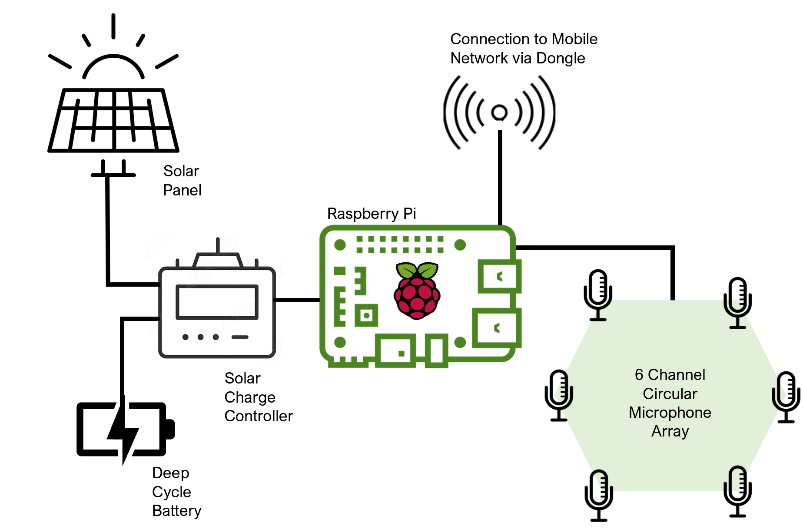

MAARU
MAARU is an exciting, accessible, low-cost option for those looking to explore spatial soundscape ecology accurately and easily. Ultimately the added directional element of the multichannel recording provided by MAARU allows for a new type of exploration into sonic environments.
We present a low-cost, open-source, 6-channel recorder built entirely from commercially available components which can be integrated into a solar-powered, networked system. The MAARU (Multichannel Acoustic Autonomous Recording Unit) works in long-term autonomous, passive and ad-hoc deployments. We introduce MAARUs hardware and software, as well as the results of lab and field tests investigating the device's durability, localisation accuracy, and other applications. MAARU provides multichannel data with similar costs and power demands to equivalent omnidirectional recorders. MAARU devices have been developed and tested in deployments in the UK and Brazil, where we have shown MAARUs can localise pure tones up to 6kHz accurately and bird calls 8m away (±10° range). We also show how beamforming can be used on MAARU devices to improve BirdNET confidence scores and recall.
MAARU is set out as in the schematic below:
Kit List
Kit List: Full component cost list (prices rounded up and accurate as of August 2023)
* Powering requirements are location (sunlight) dependant so costs will vary depending on latitude of field site (London, GB used here). ** Memory card size also variable, 128GB used here.
Powering:
| Item | Price | Links |
|---|---|---|
| 60W 12V Solar Panel | £62 | here |
| 20A Solar charge controller | £11 | here |
| 12V 24Ah LiFEPO4 Deep cycle battery | £137 | here |
| 12V to 5V Step down converter | £10 | here |
| Armoured 2-core 13AWG power cable | £3/m | here |
Core Device:
Weatherproofing
Building MAARU
MAARU can be build cheaply and easily using just a power drill and a screwdriver (I promise!)
Contact
@Becky_Heath rh862@cam.ac.uk